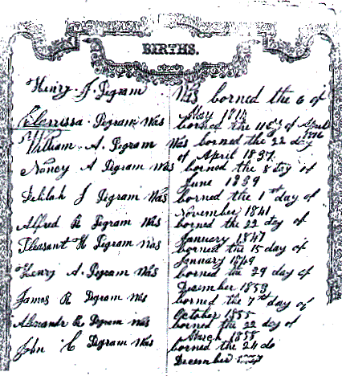

HENRY J. PEGRAM - FAMILY BIBLE RECORD
This is the first Bible record we have received and I for one think it is priceless! This comes from the family Bible of Henry J. Pegram, son of Gideon Pegram of Rockinham Co., NC. The photo copy was sent to us by John Parker whose mother is a great, great grandaughter of Henry J. Pegram and wife Clarissa Calhoun. We have other pages which we will put online shortly. Once we are able to preserve our common heritage on a CD-ROM disc this picture will be preserved for future descendents of Henry J. Pegram.
 |